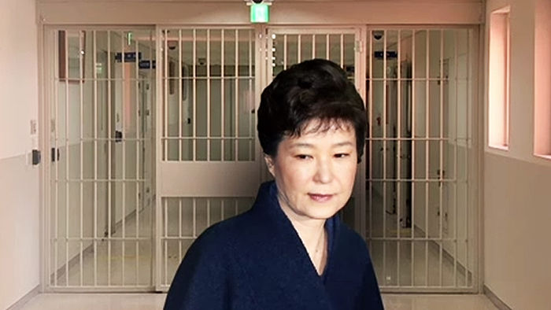

지난달 31일 구속돼 구치소에 수용된 박근혜 전 대통령의 구속 이후 첫 조사가 하루 앞으로 다가오면서 검찰은 질문 내용 준비와 수사 기록 검토 작업 등으로 바쁜 모습입니다.
애초 검찰은 이날 박 전 대통령을 검찰청사로 불러 조사하려고 했으나 박 전 대통령 측이 심리적 준비 상황과 경호 문제 등을 이유로 서울구치소 조사를 요청해 수용한 것으로 알려졌습니다.